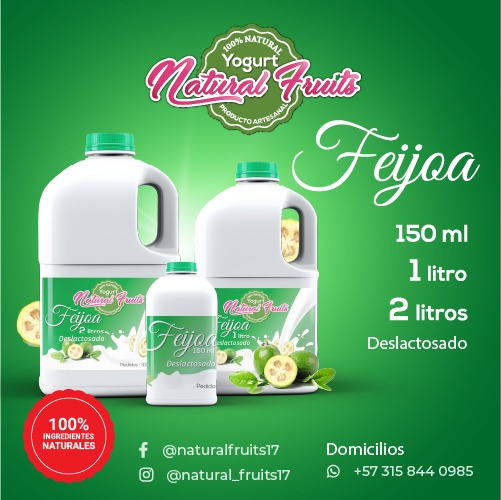
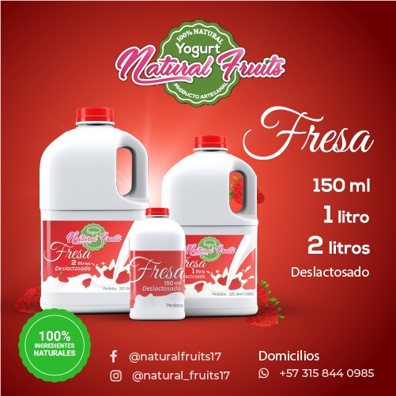
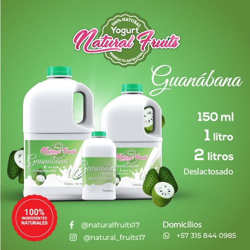
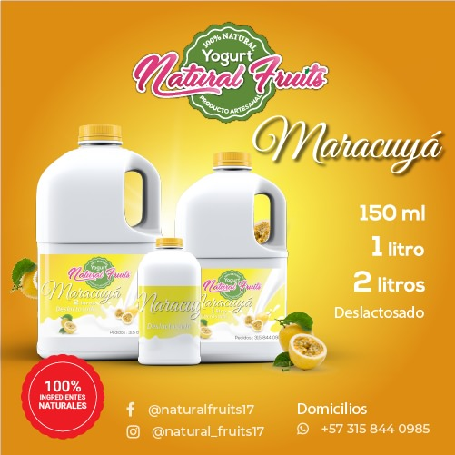
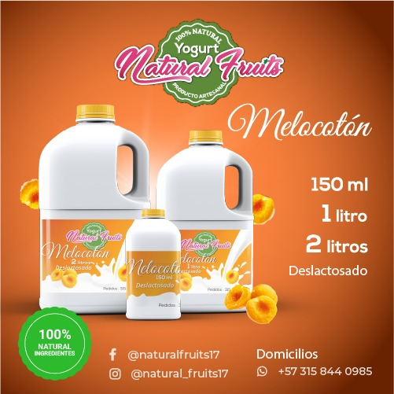
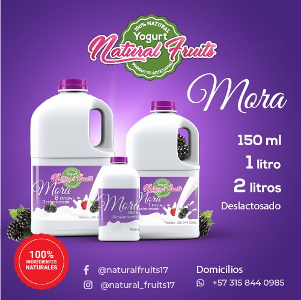

Feijoa
Un sabor fresco, aromático y naturalmente colombiano.
Yogurt Natural Fruits combina una textura espesa, ingredientes naturales y deliciosos trozos de fruta para ofrecer una experiencia diferente.

Yogurt Natural Fruits es un emprendimiento familiar dedicado a la elaboración de yogur artesanal. Su fórmula especial permite obtener una textura más espesa y un sabor natural acompañado de auténticos trozos de fruta.
Cada producto es preparado con dedicación, buscando ofrecer calidad, variedad y una alternativa diferente para compartir en familia.
Disponibles en presentaciones de 150 ml, 1 litro y 2 litros.

Un sabor fresco, aromático y naturalmente colombiano.
Dulce, cremoso y preparado con deliciosos trozos de fresa.

Una combinación suave, tropical y refrescante.

El equilibrio perfecto entre dulzura y sabor cítrico.

Suave, frutal y perfecto para cualquier momento del día.

Intenso, cremoso y elaborado con auténtico sabor frutal.
Elaborado cuidadosamente para conservar el sabor auténtico de cada fruta.
Una fórmula artesanal que produce un yogur más espeso, cremoso y agradable.
Cada sabor contiene fruta que aporta una experiencia natural y diferente.
El emprendimiento promueve oportunidades laborales y el crecimiento de mujeres emprendedoras.
Comunícate con Yogurt Natural Fruits para consultar disponibilidad, presentaciones y domicilios.